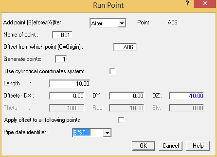
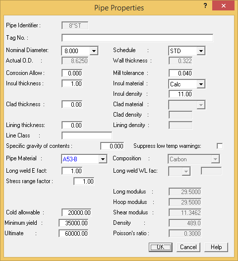
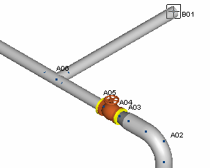

Select Insert > Piping Components > Run.

- Input – 10 {-3000} in the DZ offset field.
- Input 8”ST {200STD53} in the Pipe data Identifier field. Press OK to close the dialog.
- AutoPIPE recognizes that 8”ST {200STD53} has not been previously defined and automatically
displays the Pipe Properties dialog.

- Select A53-B as the Pipe Material, and then press OK to close the dialog. AutoPIPE automatically updates the Cold Allowable and pipe properties for the newly selected material.
- The Operating Pressure & Temperature dialog is displayed. Press OK to accept the default values. The model appears as shown in the following figure.

Earlier in this chapter you placed an elbow using the Insert > Bend command. An alternative method is to simply route two perpendicular pipe runs, and then convert the intersecting point to an elbow. This method is demonstrated below.